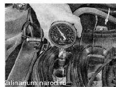

Компрессия в цилиндрах двигателя проверкаДля выполнения работы потребуется помощник, а также компрессометр. Последовательность выполнения 1. Подготавливаем автомобиль к выполнению работы. 2. Прогреваем двигатель до рабочей температуры и выключаем зажигание. 3. Вынимаем предохранители ЭБУ и цепей системы управления двигателем. 4. Сбрасываем давление топлива . 5. Выворачиваем свечи зажигания. 6. Устанавливаем компрессометр в свечное отверстие одного из цилиндров двигателя. 
7. Помощник нажимает педаль газа до упора в пол (чтобы полностью открылась дроссельная заслонка) и включает стартер на 5 — Юс. Измерения должны выполняться при полностью заряженной аккумуляторной батарее, иначе показания будут неверны. 8. Запоминаем либо записываем показания компрессометра и обнуляем прибор. 9. Аналогично замеряем компрессию в трех оставшихся цилиндрах. У исправного двигателя компрессия в цилиндрах должна быть не менее 1,0 МПа (10 бар), а разница в компрессии между цилиндрами — не более 0,1 МПа (1,0 бар). 10. Если компрессия меньше, то медицинским шприцем или ^масленкой заливаем около 10 см моторного масла в свечные отверстия цилиндров двигателя с низкой компрессией. 11. Повторяем проверку компрессии. Если компрессия возросла, возможно, «залегли» кольца или изношена поршневая группа . В противном случае неплотно закрываются клапаны или неисправна прокладка головки блока цилиндров. Можно попытаться устранить залегание клапанов специальными препаратами, заливаемыми в топливный бак или непосредственно в цилиндры двигателя (см. «Инструкцию» к препарату). Герметичность клапанов можно проверить сжатым воздухом под давлением 0,2-0,3 МПа (2-З кгс/см''), подаваемым через свечные отверстия. Подавать воздух необходимо при таком положении распределительного вала, когда оба клапана проверяемого цилиндра закрыты. Если неисправен выпускной клапан, воздух будет выходить через систему выпуска отработавших газов, а если неисправен впускной клапан -через дроссельный узел. Если неисправна поршневая группа, воздух будет выходить через маслозаливную горловину. Выход пузырьков воздуха через охлаждающую жидкость в расширительном бачке свидетельствует о неисправности прокладки головки блока цилиндров. |